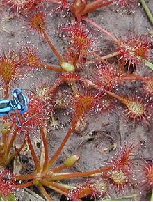
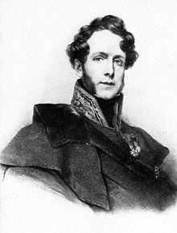
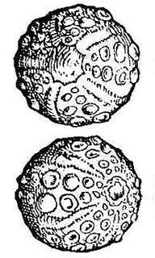
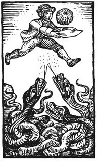
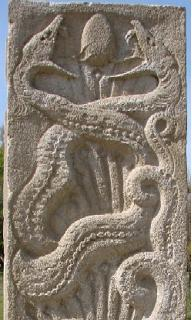

II
Merlin devin
Merlin the Seer
Dialecte de Cornouaille
|
Il en est de même des deux morceaux communiqués par Mme de Saint-Prix (dont le nom n'est révélé qu'en 1867) "J'ai été mis sur la trace du poème de Merlin par Mme de Saint-Prix, qui a bien voulu m'en communiquer des fragments chantés dans le pays de Tréguier." Selon Luzel et Joseph Loth, cités (P. 389 de son "La Villemarqué") par Francis Gourvil qui se range à leur avis, ce chant mythologique ferait partie de la catégorie des chants inventés . |
The two fragments contributed by Mme de Saint-Prix (whose name is disclosed only in 1867) also refer to these poems: "I was put on the scent of the Merlin poem by Mme de Saint-Prix who was so friendly as to send me fragments of it that are sung in the Tréguier area". According to Luzel and Joseph Loth, quoted by Francis Gourvil (p. 389 of his "La Villemarqué"), this mythological song was " invented " by its alleged collector. |
Ton
(Sol majeur, arrangt MIDI d'après Friedrich Silcher 1841, fond sonore de cette page)
| Français | English |
|---|---|
|
1. Merlin, Merlin, où allez-vous
Si tôt avec votre chien loup? You ou you. refrain You, you, ou, you, you, ou, You, you, ou, you, ou. 2. Je m'en vais chercher le moyen De dénicher un bel œuf brun. refrain 3. L'œuf brun pondu par le serpent, Marin dans un creux des brisants. 4. Je vais chercher parmi les prés Le cresson vert, l'herbe dorée. 5. Je cherche aussi le gui du chêne Dans le bois, près de la fontaine. 6. Merlin, Merlin, restez ici! Et laissez au chêne son gui! 7. Laissez le cresson dans les prés, De même que l'herbe dorée. 8. Et que l'œuf rouge du serpent Parmi l'écume et les brisants. 9. Merlin, Merlin, quittez ces lieux! Car il n'est de devin que Dieu! refrain You, you, ou, you, you, ou, You, you, ou, you, ou. (Trad. Ch.Souchon (c) 2003) |
1. - Merlin, Merlin, where do you go
With your black dog in the morning glow? Yoo, oo, yoo. chorus Yoo, yoo, oo, yoo, yoo, oo! Yoo, yoo oo, yoo, oo! 2. -I have been searching for a mean To gain here the red egg marine, chorus 3. Laid by the serpent of the sea, On the rocky shore or the reef. 4. I seek on the river's green slime Herb of Gold and watercress vine. 5. And mistletoe, the oak entwine, Amidst the wood, near the fountain. 6. -Merlin, Merlin, turn back, turn back! Leave the mistletoe on the oak: 7. And all those remedies of old, The watercress, the Herb of Gold. 8. The egg of the snake of the sea In foaming reef's holes let it be!. 9. O Merlin, what you do is bad! For there is no seer but God! chorus Yoo, yoo, oo, yoo, yoo, oo! Yoo, yoo oo, yoo, oo! (Transl. Lois Wickstrom (c) 2003) |
Cliquer ici pour lire les textes bretons.
For Breton texts, click here.

|
Le choc des religions
Lorsque, au Vème siècle, les immigrants brittoniques, déjà christianisés, refoulés vers l'ouest puis vers l'Armorique par l'envahisseur saxon prirent pied sur la péninsule, ils se trouvèrent en présence de populations païennes que leurs chefs religieux entreprirent de convertir. Alors que dans la légende de Saint Ronan , l'adversaire du Saint missionnaire est une druidesse dont les pratiques sont liées au règne animal (loup, taureau...), dans le présent chant, Merlin est décrit comme un tenant de l'ancienne religion qui utilise les plantes médicinales comme un devin et comme un guérisseur. Les herbes médicinales Une médecine traditionnelle à base d'herbes est toujours en usage en Bretagne -comme dans d'autres régions du monde-. Le mot "louzou" outre sa signification première d'"herbe médicinale", a le sens de "médicament" et est utilisé aussi par les non-bretonnants, tandis que "louzaouer" désigne tant le médecin que le guérisseur. Ce chant donne des exemples de cette pharmacopée: En 1839, le jeune La Villemarqué hésite sur le sens de "Uhel-varr" qu'il traduit mot-à-mot "branche élevée du chêne", tout en indiquant dans ses notes: "Je ne vois pas ce que ce pourrait être, si ce n'était le fameux gui." Une note qui ne figure pas dans l'édition de 1867, indique à quoi pensait La Villemarqué. Là encore, c'est Pline l'Ancien et son"Histoire Naturelle" (Livre 29, chap. 12, par. 1 à 3) qui ont inspiré le jeune collecteur. L'Herbe d'Or ou Aour-yeotenn  Ainsi appelée parce qu'elle est censée briller dans la nuit. La Villemarqué commence dans ses "notes" par la décrire comme une plante médicinale ordinaire:Loin d'être une croyance populaire, cet ensemble de prescriptions reprend un passage de Pline l'Ancien (Livre 24, 103) que l'on trouvera ci-après. Mais, même si Pline indique que cette herbe est semblable à la sabine et que la feuille de cette dernière ressemble soit à celle du tamaris, soit à celle du cyprès, on n'est pas plus avancé pour l'identifier. Ce qui est certain c'est que la description de cette plante merveilleuse recoupe bien celle qu'en fait en 1831 le préhistorien Jacques Boucher de Perthes (1788-1868) dans ses "Chants Armoricains ou Souvenirs de Basse-Bretagne". Celui-ci écrit: "On ne rencontre l'herbe d'or qu'en Basse-Bretagne : l''aour-yeoten' croît dans les plaines; on l'aperçoit de très loin, elle brille comme de l'or; dès qu'on s'en approche, elle cesse de luire, et l'on ne la peut trouver; si elle est dans la rivière, elle nage contre le courant; celui qui parvient à se la procurer devient invisible à volonté, découvre les trésors, n'est jamais malade". L'auteur du Bazhaz la cite 5 fois: L'aour-yeotenn du Barzhaz eut une postérité littéraire assez riche: Le Men s'en empare, puis Sébillot qui la confond avec l'"herbe d'oubli" laquelle fait perdre son chemin au randonneur (connue, celle-ci, du Père Grégoire qui traduit "oublie" par "saouzanenn" dans son Dictionnaire en 1832). Enfin, en 1982, Pierre-Jakès Hélias en fait de le titre d'un roman où la plante est ainsi décrite : "...l'étoile portait un pistil en son centre et [elle] était éclose dans une couronne de feuilles dorées, rondes et grasses". François de Beaulieu , Président de l'association écologique "Bretagne vivante", reconnaît dans cette dernière description le drosère (ou drosera) dont il existe trois espèces dans le massif armoricain. D'autant qu'il semble s'agir de la même plante que l'"herbe au pic", dont ledit oiseau, le pivert, est friand et à qui la croyance populaire attribue des vertus similaires. On l'appelle aussi "rossolis" , c'est à dire rosée du soleil, et elle figure sous ce nom dans le dictionnaire du Père Grégoire ("rosansolis: liqueur douce et agréable"). Cette plante, aujourd'hui protégée, entre dans la composition du célèbre sirop des Vosges Cazé. C'est, en outre, une des rares plantes carnivores de nos régions et la rosée qui la recouvre -et qui en fait une "herbe d'or"- n'est autre que le suc qui attire, colle et digère les insectes. Authenticité du chant On est intrigué par le fait que bien que ce chant figure sur les brouillons de la notice au Comité historique des sciences littéraires de l'Académie Française rédigée par La Villemarqué en 1838 à l'appui d'une demande de subvention et sur celui de la lettre adressée à son président, le futur ministre Villemain, tout comme le chant suivant , "Merlin Barde", on ne trouve pas trace de notes de collecte de la main de La Villemarqué dans les archives de Keransquer. En revanche on remarque que le début des "fragments" envoyés par Mme de Saint-Prix , est reproduit dans le premier vers de Merlin-devin": fournit le thème du refrain de ce chant (et du suivant). Le goût du jeune auteur pour les images d'Epinal celtiques apparaît dans le passage de la notice qu'il consacre à ce chant et qui est presque plus long que le poème qu'il décrit: "Merlin s'est levé dès l'aurore, il parcourt les bois, les rivages, les vallées, il cherche l' œuf rouge du serpent marin , ce talisman fameux dont rien n'égalait le pouvoir; l'herbe d'or ou le sélage , le cresson vert consacré au soleil, le rameau du jeune chêne ou le gui; c'est le Druide avec tous les attributs de sa puissance, mais une voix s'élève et l'arrête: "Merlin, Merlin, retournez sur vos pas, êtes-vous plus puissant que Dieu?" Dans l'édition de 1867, qui inclut un chant intitulé "Conversion de Merlin", ces mots sont traduits par "convertissez-vous!". Ils étaient imputés à Saint Colomban dans les éditions précédentes. Maintenant, il n'est plus question que du "saint évêque auquel la tradition bretonne attribue la conversion de Merlin." Un nouveau chant, qui porte à quatre le nombre de parties du cycle Merlin, nous apprend qu'il s'agit de Saint Cado. Comme La Villemarqué l'indique lui-même dans ses "notes," cette dernière phrase se retrouve, identique mais inversée, "dans plusieurs morceaux de poésie galloise, dont deux de Lywarc'h-Hen: "Hormis Dieu, il n'y a pas de devin". ("Namyn Duw nid oes devin", cité d'après la "Myvyrian Archaeology"). On ne saurait l'accuser de feindre l'étonnement à propos du refrain "iou! iou!" quand il écrit: "C’est aujourd’hui un cri de joie ; il était aussi usité chez les Grecs et les Romains : les uns criaient : iov ! iov ! selon Aristophane, et les autres : io ! io !". Il l'a effectivement trouvé dans le "fragment" communiqué par Mme de Saint-Prix. Il n'en reste pas moins qu'on peut se demander si notre auteur n'a pas comblé le vide entre ces deux lignes et la citation de la "Myvyrian Archaeology" au moyen d'un bric-à-brac druidique inspiré de Pline l'Ancien (Cf. encadré ci-après). Ce court poème ne devrait alors rien à la tradition orale bretonne, sinon ses deux premières lignes, et serait à remiser au musée des supercheries littéraires... Ce n'est certainement pas le cas de "Merlin le Barde", comme nous le verrons. Un doute subsiste pour le premier et le dernier chant qui n'apparaissent au Barzhaz qu'en 1867. |
A clash between religions
When the Christian Briton settlers driven westwards and across the Channel by the oncoming Saxons landed on the Armorican peninsula, in the 5th century A.D., they were confronted with heathen tribes whom their religious leaders endeavoured to Christianize. While in the Legend of St Ronan , the antagonist of the holy missionary, is a druidess whose witchcraft is related to animals (wolf, steer...), in the present song, Merlin is depicted as a supporter of the old creed, who specializes on plants and herbs which he needs as a seer and a medicine man. Medicinal herbs A traditional medicine based on herbs remains still in use in Brittany -like in other parts of the world. - The word "louzoù" for "medicinal herb" usually translates as "medicament" and is also used by the non-Celtic speaking Bretons, while "louzaouer" refers both to the physician and the healer. This song gives 2 examples of this pharmacopoeia: The Reverend Gregory of Rostrenen states in his Dictionary (1732) that "Mistletoe is good against several maladies" (An uhel-varr a zo mad ouzh meur a zroug). In 1839, young Villemarqué is still unsettled about the meaning of "uhel-varr" which he translates as "high branch of the oak", but he states in his notes: Herb-of-Gold or Aour-Yeotenn  It was such called, as it was said to glisten in the night. La Villemarqué describes it in his "notes", first as an ordinary medicinal herb which is "very much appreciated by country folks" , then in a mysterious way: one must observe a special ritual when picking it, so as to be able to understand dogs, wolves and birds. He supposes it is the plant which Pliny names "selago".But this is by no means a popular belief: it is an excerpt from Pliny the Elder's Natural History (Book 24n 103) quoted hereafter. Even Pliny's statement that this herb is similar to savin whose leaf resembles either that of the tamarisk or that of the cypress, does not help us much in our endeavours to identify this herb. Anyway, this description of a marvellous plant matches up with that made in 1831 by the historian Jacques Boucher de Perthes (1788-1868) in his "Armorican songs or Records from Lower Brittany". He writes: "The Herb of Gold is to be found only in Lower Brittany: the 'aour-yeotenn' grows in the plains and is visible in the distance since it glitters like gold. If you come near it will stop sparkling and you will fail to find it. If you throw it in a river, it will float against the stream; whoever succeeds in procuring it, is able to become unvisible at will, to detect treasures and shall never be ill." The "Barzhaz" refers to it five times in the successive editions: The Barzhaz' "aour-yeotenn" has inspired many a writer: Le Men to begin with, then Sébillot who confounded it with the "herb of oblivion" whose main virtue it is to lead astray anyone who treads on it (a plant that is known of the Reverend Gregory who names it "oublie" in French and "saouzanenn" in Berton, in 1832). Last, but not least, in 1982, Pierre-Jakès Hélias who describes the "Herb of Gold" in a homonymous novel: "...the star-shaped flower with a long stalk in the middle, enclosed in a rosette of fat, round, golden leaves". François de Beaulieu , the chairman of the ecological society "Living Brittany", recognizes in this description the Sundew (Drosera) three species of which may be found in inner Brittany. It is apparently the same plant as the "woodpecker's herb", of which the said bird is very fond, and which people credit with similar virtues. It is also called "rosolis" , i.e. "sun dew", and is to be found under that name in the Reverend Gregory's dictionary ("rosansolis": a sweet and flavoursome liquor"). The same endangered but now protected plant is one of the ingredients of the famous Syrup Cazé from the Vosges. Besides, it is one of the few carnivorous plants in Western Europe and the glistening dew covering it, making of it a "Herb of Gold" is the mucilage that attracts, sticks and digests insects. A genuine folk song? It is puzzling that, though the song is mentioned, along with the next one , on the draft for the notice intended for the Historical Committee of Literary sciences with the French Academy, set out by La Villemarqué, to be attached to a request for subsidy, as well as in the letter to its president, the future minister Villemain, there should be no trace left in the Keransquer archives of a handwritten record of the said song. On the other hand the first line of the "fragments" contributed by Mme de Saint-Prix has become the first line of the present poem That the young collector takes delight in cheap Celtic imagery appears clearly in the paragraph of the "notice" where this song is dealt with. It is nearly longer than the poem itself: "Merlin got up at sunrise. Now he is roaming the woods, the river banks, the dales, in search of the red egg of the sea serpent , a talisman powerful beyond compare; the Herb of Gold or selagium , the "solar" plant red watercress , the twig of the young oak or mistletoe; he is a Druid with all insignia of his power, but a voice is heard and he stops: "Merlin, Merlin, go back to whence you come. Do you deem yourself mightier than God?" In the 1867 edition, these words were translated as "Be converted!". They were ascribed to Saint Columba in the previous editions. Now they are uttered by "the holy man whom Breton tradition credits with Merlin's conversion." A new song that extends the list of Merlin songs to four items reveals his name: Saint Cado. As mentioned by La Villemarqué himself in his "notes", this latter sentence is found unchanged but for the order of the words "in several Welsh poems, two of them by Llywarch-Hen: "There is no seer here below but God" ("Namyn Duw nid oes devin" , quoted after the "Myvyrian Archaeology"). He cannot be reproached with feigning to be astonished by the burden "Yoo! yoo!", when he writes: "Nowadays this is a cheer; so was it with the Greeks and the Romans: the former ones would cry: iov! iov!, as Aristophanes writes, the latter ones: io! io!" He really found it in the "fragment" sent by Mme de Saint-Prix. Nevertheless we may wonder if the young Bard did not pad out the gap between these two lines and the excerpt from the Myvyrian Archaeology with "druidic" bric-a-brac stuff provided by Pliny the Elder (See additional text below). If it were so, this short poem would not owe very much to Breton oral tradition, except the two first lines and would have its place in the museum of literary forgery... This certainly does not apply to the next song, as we will see. As to the first and last songs included in the Barzhaz in 1867, elements of doubt hang over them. |
Ce que ce chant doit à Pline l'Ancien
How much is this song indebted to Pliny the Elder?
|
Le sélage
"Il est une herbe semblable à la sabine, que l'on appelle "sélage". Il faut l'arracher sans couteau en passant la main droite par l'ouverture gauche de la tunique, comme si on la volait. On doit être vêtu de blanc, avoir les pieds nus et bien lavés et avoir préalablement offert un sacrifice de pain et de vin. On l'emporte dans une serviette neuve. Les Druides gaulois ont prétendu quil faut toujours l'avoir sur soi pour se préserver de tous les accidents et que sa fumée est utile pour protéger contre toutes les maladies des yeux." (Pline, Histoire naturelle, XXIV, 103). Les druides et le gui "N'oublions pas, à ce propos, combien les Gaulois vénèrent [le gui]. Les druides – qui sont leurs mages – n’ont rien de plus sacré que le gui et l’arbre où il pousse, si c'est un rouvre... Mais c'est très rare, et, si l'on en trouve, on le cueille en grande pompe, surtout le 6ème jour de la lune qui marque pour eux les débuts des mois et des années et des siècles au bout de trente ans, parce qu’elle a déjà assez de force, sans être en son milieu. Ils appellent [le gui] dans leur langue «la plante qui guérit tout». Sous l’arbre, on procède d'abord à un repas rituel, puis on amène deux taureaux blancs dont les cornes sont attachées pour la 1ère fois. Les prêtres vêtus de blanc montent dans l’arbre, avec une serpe d’or ils coupent le gui : celui-ci est recueilli dans un sayon blanc. Ensuite on immolen les victimes en priant Dieu que ce sacrifice soit propice à ceux pour qui il fut fait.» (Pline, Histoire naturelle, XVI, 250). L’ovum anguinum ou “œuf de serpent”.  "Il est une espèce d’œuf, oubliée par les Grecs, mais en grand renom dans les Gaules: en été, des serpents innombrables se rassemblent, enlacés et collés les uns aux autres par la bave et l’écume de leur corps; cela s’appelle "œuf de serpent" (anguinum).Les druides disent que cet œuf est projeté en l’air par les sifflements des reptiles et qu’il faut le recevoir dans une saie (drap) avant qu’il touche la terre. Le ravisseur doit s’enfuir à cheval, car les serpents le poursuivent jusqu’à ce qu’ils en soient empêchés par l’obstacle d’une rivière. On reconnaît cet œuf à ce qu’il flotte contre le courant. Mais comme les mages sont habiles à dissimuler leurs fraudes, ils affirment qu’il faut attendre une certaine lune pour recueillir cet œuf comme si la volonté humaine pouvait faire coïncider la réunion des serpents avec la date indiquée. J’ai vu cet œuf: il est de la grosseur d’une pomme ronde moyenne et la coque en est cartilagineuse, avec de nombreuses cupules, comme celles des bras des poulpes. Les druides le disent efficace pour gagner un procès ou l’accès auprès des rois. Rien n'est plus faux: un chevalier romain du pays des Voconnes qui, dans un procès en portait un, fut mis à mort parle divin empereur Claude, pour cette seule raison, à ma connaissance. Toutefois ces entrelacements de serpents, cette concorde d'animaux féroces, paraissent être le motif pour lequel les nations étrangères ont entouré de serpents le caducée en symbole de paix : l'usage est que ces serpents du caducée n'aient pas de crête {comme les dragons]." (Pline, Histoire naturelle, XXiX, 52). Note: L'objet qu'a vu par Pline était bien sûr d'origine naturelle et la description qu'il en fait, fait avant tout penser à un grand oursin fossilisé... Cette explication est corroborée par la tradition médiévale: ainsi De Boot représente-t-il deux oursins fossiles comme des spécimens de ce qu'on considérait de son temps comme de véritables œufs de serpent et qu'on recommandait comme un antidote contre le poison. Les vertus attribuées à ce talisman du temps de Pline étaient autrement plus grandes: magiques, non simplement médicinales. C'est pour avoir tenté d'égarer la justice par la magie que Claude fit exécuter le chevalier gaulois. Apparemment l'empereur était présent au procès, ce qui rendait ce délit particulièrement grave. (C.W. King in "Natural history of precious stones and gems, 1865) |
De selagine
"Similis herbae huic Sabinae est selago appellata. legitur sine ferro, dextra manu per tunicam operta, sinistra eruitur velut a furante, candida veste vestito pureque lautis nudis pedibus, sacro facto, priusquam legatur, pane vinoque; fertur in mappa nova. hanc contra perniciem omnem habendam prodidere Druidae Gallorum et contra omnia oculorum vitia fumum eius prodesse." (Plinii Historia naturalis, XXIV, 103). De Druidis et visco "Non est omittenda in hac re et Galliarum admiratio. Nihil habent Druidae — ita suos appellant magos — visco et arbore, in qua gignatur, si modo sit robur, sacratius... Est autem id rarum admodum inventu et repertum magna religione petitur et ante omnia sexta luna, quae principia mensum annorumque his facit et saeculi post tricesimum annum, quia iam virium abunde habeat nec sit sui dimidia. Omnia "sanantem" appellant suo vocabulo. Sacrificio epulisque rite sub arbore comparatis duos admovent candidi coloris tauros, quorum cornua tum primum vinciantur. Sacerdos candida veste cultus arborem scandit, falce aurea demetit, candido id excipitur sago. Tum deinde victimas immolant praecantes, suum donum deus prosperum faciat iis quibus dederit." (Plinii Historia naturalis, XVI, 250). De "Ovo anguino"  "Praeterea est ovorum genus in magna fama Galliarum, omissum Graecis. angues enim numerose convoluti salicis faucium corporumque spumis artifici conplexu glomerant."Anguinum" appellatur. Druidae sibilis id dicunt in sublime iactari sagoque oportere intercipi, ne tellurem attingat. Profugere raptorem equo, serpentes enim insequi, donec arceantur amnis alicuius interventu. Experimentum eius esse, si contra aquas fluitet vel auro vinctum. Atque, ut est Magorum sollertia occultandis fraudibus sagax, certa luna capiendum censent, tamquam congruere operationem eam serpentium humani sit arbitrii. Vidi equidem id ovum mali orbiculati modici magnitudine, crusta cartilagineis velut acetabulis bracchiorum polypi crebris insigne. Druidis ad victorias litium ac regum aditus mire laudatur, tantae vanitatis, ut habentem id in lite in sinu equitem Romanum e Vocontiis a divo Claudio principe interemptum non ob aliud sciam. Hic tamen complexus anguium et frugifera eorum concordia in causa videtur esse, quare exterae gentes caduceum in pacis argumentis circumdata effigie anguium fecerint. Neque enim cristatos esse in caduceo mos est." (Plinii Historia naturalis, XXIX, 52). |
Selago
"Similar to savin is the herb known as "selago." Care is taken to gather it without the use of iron, the right hand being passed for the purpose through the left sleeve of the tunic, as though the gatherer were in the act of committing a theft. The clothing too must be white, the feet bare and washed clean, and a sacrifice of bread and wine must be made before gathering it: it is carried also in a new napkin. The Druids of Gaul have pretended that this plant should be carried about the person as a preservative against accidents of all kinds, and that the smoke of it is extremely good for all maladies of the eyes." (Pliny the Elder: The Natural History, XXIV, 103). Druids and mistletoe "We must not omit to mention the admiration lavished [on this plant] by the Gauls. The Druids —their magicians— hold nothing more sacred than the mistletoe and the tree bearing it, as far as it is an oak. But mistletoe is rarely found on the oak; and when found, is gathered with religious awe, particularly on the 5th day of the moon, which starts their months and years, as well as their 30 year ages, since the moon, though not yet full, has already great power. They call the mistletoe the "all-healing" in their language. Having performed the sacrifice and a banquet beneath the trees, they bring 2 white bulls, the horns of which are bound then for the 1st time. Clad in white, the priest ascends the tree, and cuts the mistletoe with a golden sickle, which is received by others in a white cloak. They then immolate the victims, praying to God that He will render this gift of His propitious to those to whom He has so granted it." (Pliny the Elder: The Natural History, XVI, 250). Ovum Anguinum, Druid's bead  "Moreover, there is a kind of egg in mighty reputation in the Gallic provinces, of which Greek writers have no mention. Innumerable snakes, twining together in summer, make a ball, by a skilful combination, out of the froth from their jaws and the slime of their bodies. It is called the "Ovum Anguinum". The Druids assert that it is tossed on high by their breath, and must be caught in a cloak before it touch the ground : the robber makes his escape on horseback, the snakes following him till they are stopped by the intervention of a running stream. The test of its reality is, that it should float against the stream, even though set in gold ; and, so ingenious are magicians in disguising their impositions, they declare it must (to have any virtue) be captured at a particular age of the moon—as though it were within the will of man that such an operation should coincide with any determined time. I have myself certainly seen the egg, which is of the size of a small, round apple, covered with a cartilaginous crust, with many excrescences, like the suckers ' on the arms of the octopus. It was being worn at the moment as the badge of a Druid. It is marvellously extolled for its effect in giving success in battle and in petitions to princes: a proof of the falsity of which is the fact, that to my knowledge a Roman knight from Vocontii was put to death by the Emperor Claudius for no other cause than the carrying of one in his bosom during a trial. This embracing together of the serpents, and their thus productive union, seems to be the cause why foreign nations have made the Caduceus entwined with snakes, one of the emblems of peace ; for it is not the custom to represent the snakes on the Caduceus as having crests [like dragons]."(Pliny the Elder: The Natural History, XXIX, 52). Note: The object seen by Pliny was evidently some natural production, and his description applies better to a large fossil echinus than to anything else... This explanation is corroborated by Medieval tradition; for De Boot actually figures two fossil echini as specimens of what in his day was accounted as the true Ovum Anguinum, and prized as an antidote against poison ...Anciently the virtues attributed to it were of a much higher and supernatural order, not merely medicinal. It was for the attempt to pervert justice by magical means that Claudius... put to death the Gallic gentleman who had come armed with one into Court, his cause apparently being tried before the Emperor himself: whence the peculiar heinousness of the offence. (C.W. King in "Natural history of precious stones and gems, 1865) |